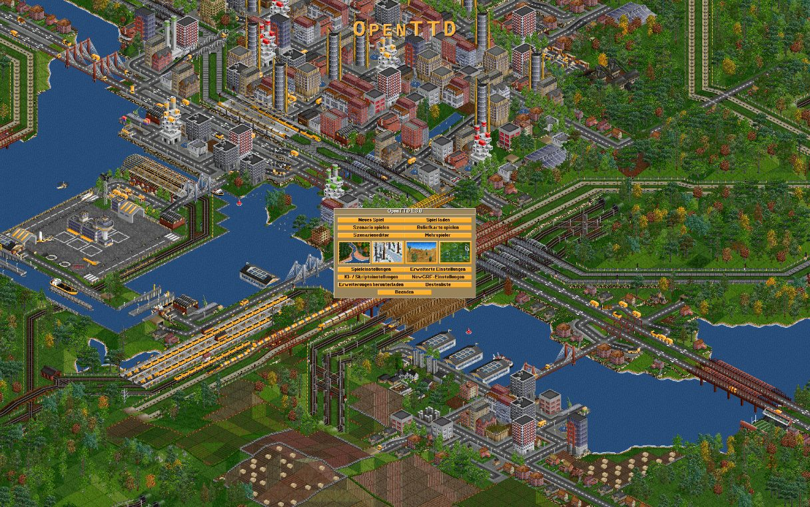
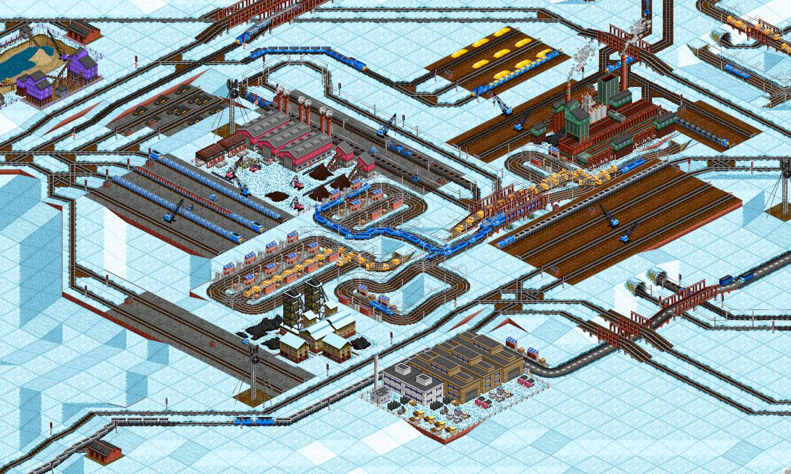
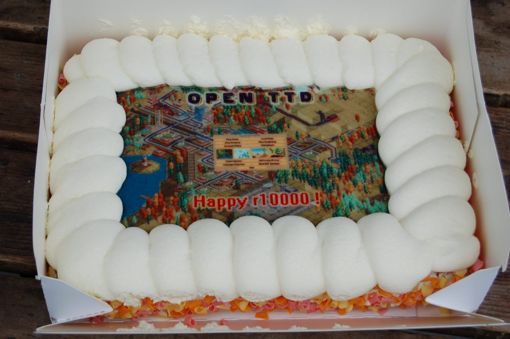

What the game is
Plan stations, tracks, roads, signals, timetables, vehicles, and industries so cargo flows profitably across the map.
An open-source transport tycoon simulation: build rail, road, air, and shipping networks, move passengers and cargo, grow towns, and compete or cooperate in huge long-running economies.
Choose OpenTTD when you want an economy sandbox rather than combat. It can run for hours, supports multiplayer, and is a strong low-resource candidate once installers and a server/client loop are cached.
Plan stations, tracks, roads, signals, timetables, vehicles, and industries so cargo flows profitably across the map.
The official website mirror and screenshots are present on GannanNet, enough to introduce the game and point players at the local mirror.
Windows, Linux, macOS, and base asset downloads are now stored locally. A real player join/play smoke is still the next next check.
OpenTTD 15.3 clients and the free base graphics, sound, and music packs are stored locally so first launch works without internet.
Default Windows 64-bit installer.
Download EXEExtract-and-run package for Windows.
Download ZIPGeneric Linux x86_64 package.
Download Linux archiveUniversal macOS package.
Download DMGOpenGFX, OpenSFX, and OpenMSX are cached for offline first launch.
Open download shelfCurated OpenTTD manual pages are mirrored locally.
Open local manualSelected screenshots are cached inside this hub so the arcade can explain the game offline.



This is a starter guide, not a full manual. Use the local mirror links for deeper offline reading where available.
Connect two towns or one industry chain before building an enormous network.
Passengers and cargo only pay if your service is frequent and reliable.
Signals prevent train jams and crashes. Simple block signals are enough for a first network.
Longer trains, better engines, and bus/truck feeders can fix bottlenecks without rebuilding everything.
Debt can be useful, but idle vehicles and broken routes quietly drain money.
These links point at the current GannanNet mirror. If the internet is down, the local mirror links should still work.
Official website mirror and OpenTTD project pages.
See ATTRIBUTION.txt for screenshot and source notes.
Promotion path: cache the OpenTTD client for the target devices, confirm required base graphics are included, then add a dedicated-server profile with a small map and saved config. A useful smoke test should create or load a map, accept a client, and shut down cleanly.
Admin expectation: OpenTTD is a good candidate for an on-demand service with a saved world because games can run for a long time and should not consume resources when nobody is playing.
This tells players whether the entry is ready to play or only ready to research.
/var/www/html/mirrors/openttd, about 123 MB
Cached locally
Run real client join/play smoke